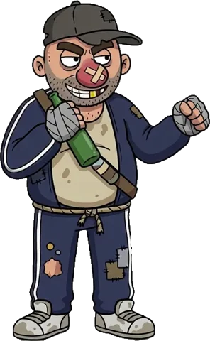
Дядя Валера
Последний раунд!
«Бомж Файтинг» — 2D-файтинг один на один в духе классических аркад. Вантуз, авоська с банками, картонный щит и швабра вместо мечей: у каждого бойца свои удары, спецприёмы и суперприём на весь экран.
Под именем — суперприём бойца.

Последний раунд!
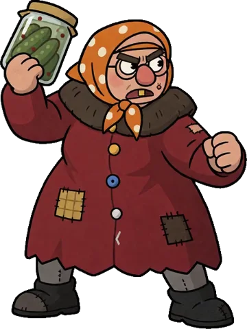
Скидка 90%!
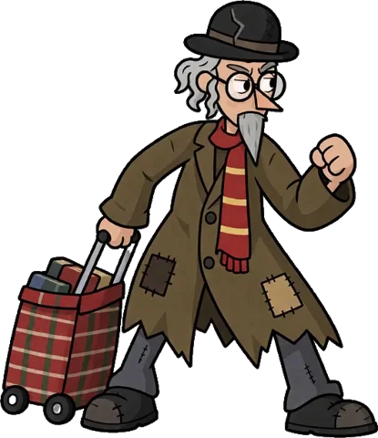
Защита диссертации!
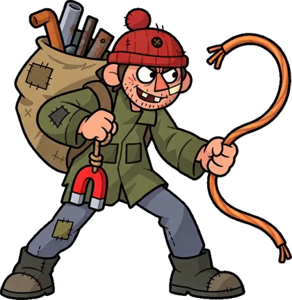
Сдача цветмета!
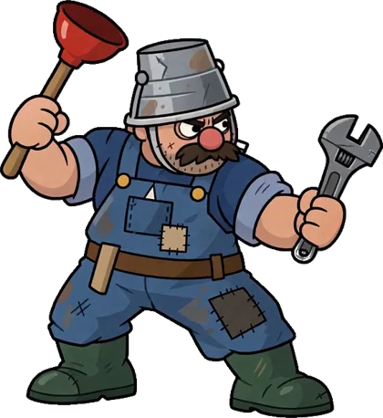
Потоп!
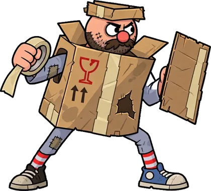
Коробочный дворец!
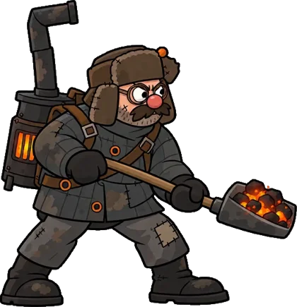
Полная топка!
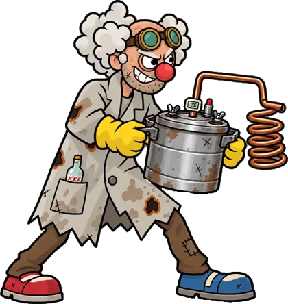
Перегонка!
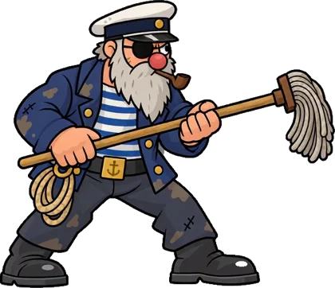
Девятый вал!
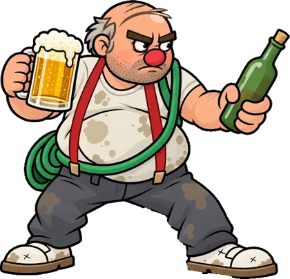
Брожение!
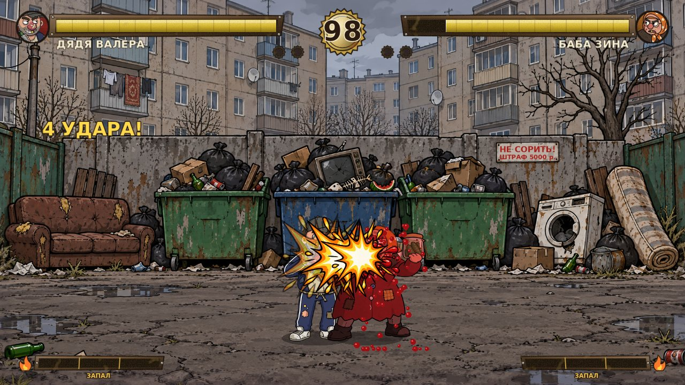
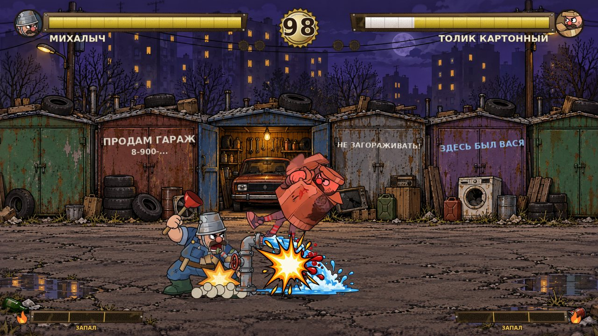
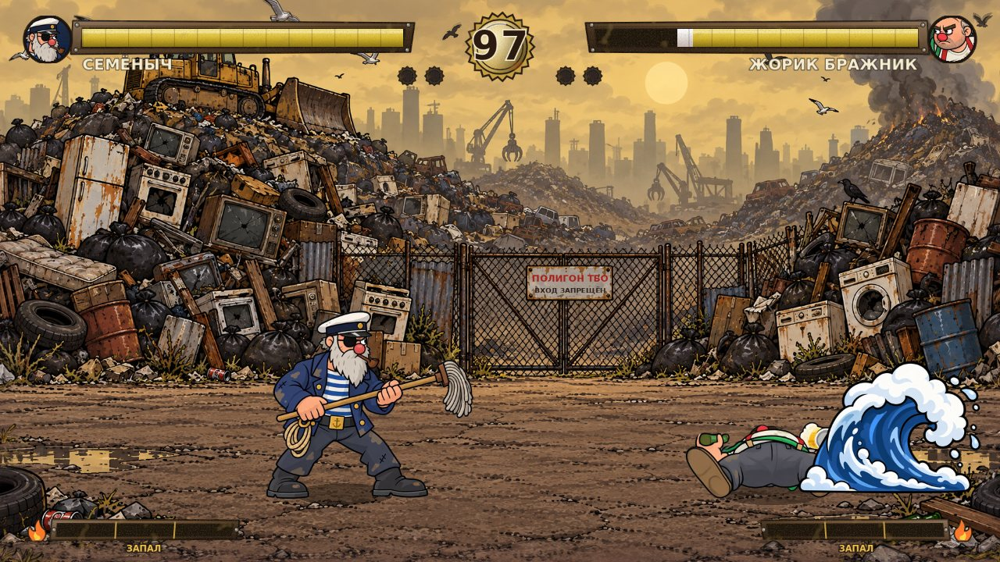
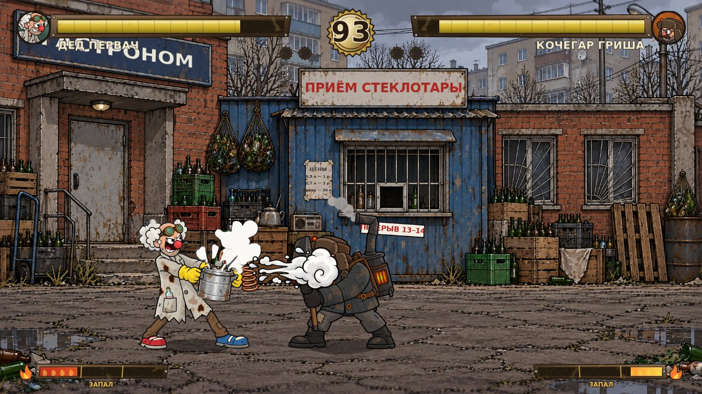
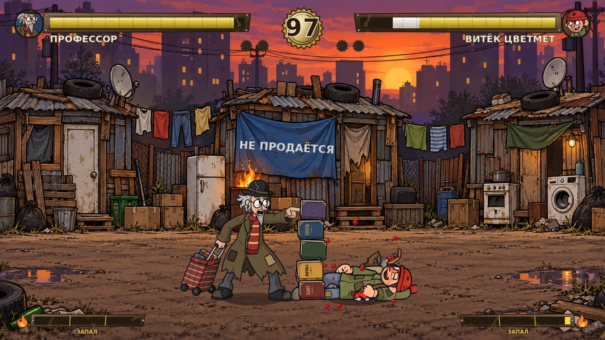
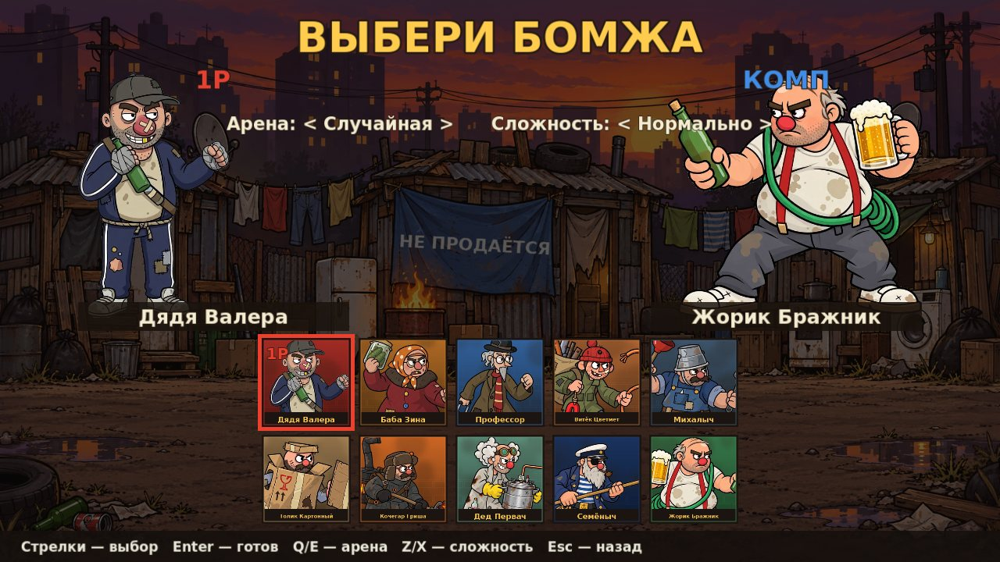
Пройди всех бойцов района подряд, смотри комиксы между боями и получай достижения.
Любой боец, любая арена и три уровня сложности компьютера.
Сразитесь с другом на двух телефонах в одной сети Wi-Fi.